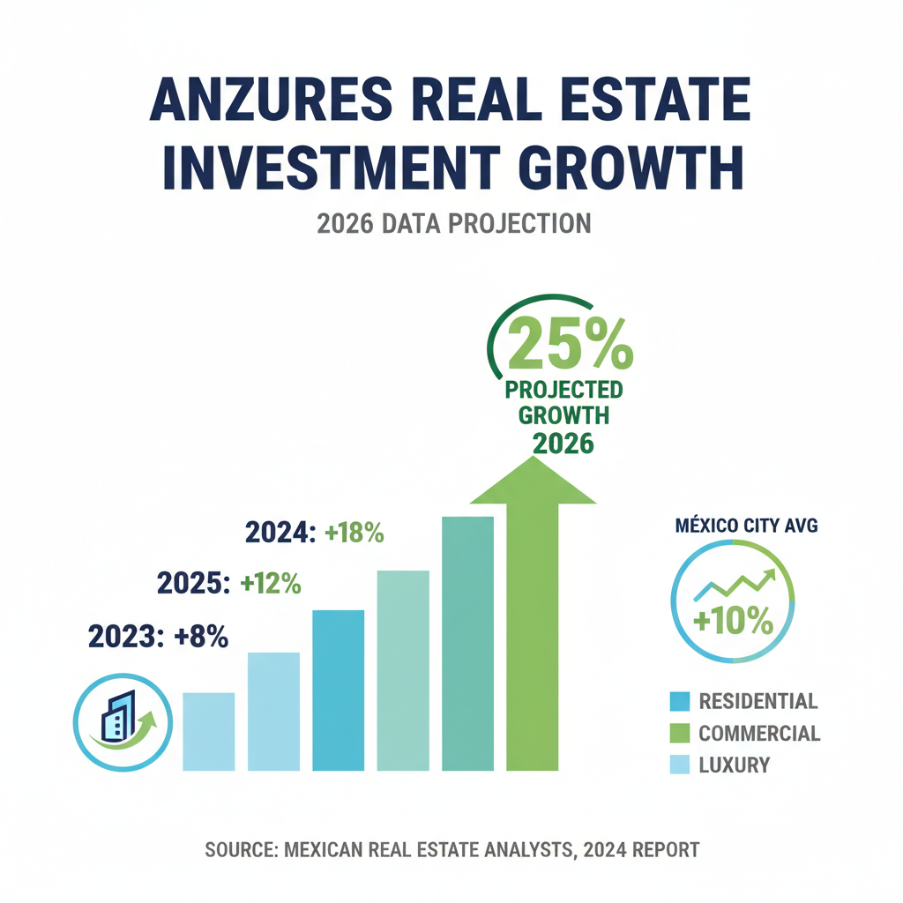

Architectural Guide 2026
The Enduring Prestige of Anzures
Nestled between the corporate pulse of Reforma and the exclusive serenity of Polanco, Anzures offers a singular blend of mid-century grace and contemporary luxury. We specialize in transforming these architecturally significant structures into meticulously engineered, high-yield assets, bridging international design aspirations with Mexico City’s distinct architectural reality.
The Resident Architect's View
From my studio in Condesa, I often look towards Anzures, drawn by a different kind of architectural symphony. It’s the late afternoon light, a specific golden hour, that truly bathes the 1940s and 50s facades along Calle Goethe, revealing a texture and depth unique to this part of the city. There’s a quiet dignity here, a sense of established gravitas you don't find elsewhere. While the early morning calls of the gasero or fierro viejo trucks echo across all of Mexico City, in Anzures, they merely punctuate a profound, refined silence.

Erik Martínez, AIA
Principal Architect. Former SHoP Architects NYC. Bringing international precision to CDMX's most complex heritage assets.
Iconic Landmarks
- Torre Ejecutiva Pemex
- Parque Verónica Anzures
- Calle Goethe (Diplomatic Residences)
- Bosque de Chapultepec (Proximity)
- Paseo de la Reforma (Corporate Corridor)
Colonia Anzures: A Mid-Century Legacy Reimagined
Colonia Anzures, a name whispered with an almost diplomatic reverence, emerged from a transformative period in Mexico City's urban development. Unlike some of its older counterparts that grew organically from colonial villages, Anzures was conceived in the mid-20th century, a purposeful expansion designed to buffer the burgeoning corporate corridors of Paseo de la Reforma from the nascent luxury residential enclaves of Polanco. This intentional planning laid the groundwork for a neighborhood characterized by spacious avenues and robust mid-century 'Modernist' and 'Functionalist' architecture, a testament to Mexico's post-revolution aspirations.
The Architecture of Enduring Style
The architectural lexicon of Anzures is one of understated elegance, defined by its wealth of mid-century 'Modernist' and 'Functionalist' structures. Streets like Calle Goethe, Calle Leibnitz, and Calle Darwin are not merely addresses; they are living galleries of original 1940s and 1950s facades, each telling a story of Mexico City's golden age of design. Our commitment is to meticulously restore these irreplaceable designs, bringing them into the 21st century with advanced engineering while preserving the aesthetic integrity that makes Anzures truly exceptional.
Geotechnical Reality: The Subtlety of Zone II
While less dramatic than the notorious lakebed of Condesa, Anzures lies in Seismic Zone II (Transition). This means the sub-soil here comprises moderate clay layers, up to 20 meters deep, which can still result in significant seismic amplification compared to the firm ground of Lomas de Chapultepec. This isn’t a 'standard' build; it demands precise engineering tailored to the specific block, as soil quality can vary even within Anzures.
Our approach mandates site-specific geotechnical studies to inform foundation design. Structures in Anzures typically require compensated raft foundations or deep piles extending 15 to 25 meters to reach the underlying hard strata, mitigating the effects of seismic waves and ongoing regional subsidence. We ensure your structure not only meets but exceeds post-2017 building codes, integrating advanced seismic engineering that bridges US NCARB/AIA standards with local expertise, providing enduring structural resilience for your investment.
Heritage Integration: Navigating the INBAL Mandate
A defining characteristic of Anzures, and a significant value driver, is its protection by the National Institute of Fine Arts and Literature (INBAL). Many properties, particularly along Calle Goethe, Calle Leibnitz, and Calle Darwin, are listed in the 'Catálogo de Inmuebles con Valor Artístico.' This designation means any exterior modification, from a window replacement to a facade restoration, requires a rigorous INBAL review and 'Visto Bueno' (approval).
These are not merely guidelines; they are strict preservation mandates. We navigate these Heritage Hurdles, ensuring adherence to the original chromatic study of the building, preserving or replicating original steel or wood window profiles (prohibiting white PVC or contemporary industrial aluminum), and designing any modern additions—such as AC condensers—to be invisible from the primary street view. This bureaucratic process can add 4 to 6 months to your pre-development timeline, but it is precisely this diligence that preserves the neighborhood's unique, low-density charm and prevents it from being overshadowed by generic 'glass box' developments.
Water Security: Beyond the Cutzamala Recovery
While the Sistema Cutzamala entered 2026 at its best capacity in six years (91%), the distribution infrastructure in Miguel Hidalgo remains prone to localized pressure drops. Anzures is considered a 'privileged' zone, typically exempt from the 'tandeo' (scheduled rationing) that affects hundreds of other colonias. However, our standard for ultra-high-net-worth properties goes beyond basic provision. We engineer each residence with robust water autonomy, recommending a minimum dedicated cistern capacity of 5,000 to 7,500 liters for a standard 150m² 'Lifestyle' apartment, or 1,000 liters per occupant plus a 2,000-liter common area reserve. Integrating advanced water management systems, including rainwater harvesting and greywater recycling, not only fortifies your home's resilience but also enhances its long-term asset value, appealing to a demographic increasingly focused on ESG integration.
Architectural Feasibility: Anzures 2026
| Project Type | Avg. Permit Time | Seismic Risk Level | Conservation Status |
|---|---|---|---|
| Lifestyle Renovation (Catalogued Mid-Century Apartment) | 12 - 18 Months | Moderate (INBAL delays, Zone II foundations) | Highly Regulated (INBAL, H/3/20 zoning) |
| Strategic Modernization & Seismic Retrofit (Non-Catalogued Property) | 9 - 12 Months | Moderate (Zone II foundations, utility upgrades) | Regulated (H/3/20, Public Space Contributions) |
| Interior Luxury Refurbishment (Existing Structure) | 3 - 6 Months | Low (internal works) | Streamlined (Manifestación Tipo A) |
Specialized Renovations: Crafting a Sanctuary
The essence of a luxury renovation in Anzures is creating a sanctuary of serenity and modern functionality within an iconic mid-century shell. This isn't just aesthetic; it's a technical imperative. We integrate high-STC double-glazed windows to mitigate the ambient city soundscape—from the ubiquitous street vendors to spillover noise from Polanco's nightlife. Internally, silent plumbing systems and advanced sound-dampening insulation ensure unparalleled acoustic privacy. Beyond sound, we address the 'Nomad Layer' with precision: automated thermal blackout systems for optimal light control, localized voltage regulators, and even lithium-ion battery backup systems (such as Tesla Powerwall) for uninterrupted power stability, critical in an era of increasing grid pressure. Every detail is engineered for an uncompromising lifestyle, ensuring your Anzures residence performs at the pinnacle of international luxury standards.
High-End Interior Design: Mid-Century Reimagined
Our interior design philosophy for Anzures marries the inherent elegance of mid-century modernism with cutting-edge functionality. We believe in respecting the architectural integrity while providing bespoke luxury. This means sourcing exquisite local materials like handcrafted Talavera tiles or bespoke carpentry, juxtaposed with imported smart home systems and central climate control. We prioritize seamless integration: advanced LED lighting schemes designed to enhance the often-generous but sometimes deep floor plans, custom joinery that echoes the clean lines of the original architecture, and ergonomic flow for the discerning international executive. It's about creating spaces that are both visually stunning and intuitively performative, a true reflection of contemporary ultra-luxury living.
The Anzures Cheat Sheet
- Best Streets Goethe, Leibnitz, Darwin, Paseo de la Reforma
- Zoning Code H/3/20 (Habitacional), HM (Habitacional Mixto) on corridors
- Est. Cost / m² MXN 72,000 - 88,000 / m² (Premium Renovated)
- Best Coffee A discreet espresso counter on Kepler
- Local Quirk Strategic buffer between corporate Reforma and exclusive Polanco
The Challenge
The unique challenges in Anzures stem from navigating its nuanced regulatory environment and the inherent complexities of its mid-century heritage. Beyond the immediate structural demands of Seismic Zone II, every significant renovation requires meticulous adherence to INBAL's aesthetic mandates, which can add months to pre-development. Additionally, the Miguel Hidalgo borough's stringent Publicitación Vecinal process ensures neighborhood associations scrutinize plans, requiring expert mediation to avoid project blockages.
Furthermore, new investors must account for localized 'hidden costs,' from higher utility connection fees (especially for upgrading aging electrical infrastructure) to mandatory Public Space Contributions (1-4% of project budget) required by SEDUVI. And for any significant build, we must actively counter the inflated 'Gringo Tax' on labor rates, which can see foreign owners quoted up to double the fair market price for skilled maistro work.
Our Solution
We eliminate the 'Gringo Tax' and bureaucratic friction by serving as your local Architect and Project Manager, operating on a transparent, fixed-fee basis. Our deep-rooted network of local Notarios and highly vetted Directores Responsables de Obra (DROs)—who bear the ultimate legal and structural liability—ensures your project adheres to H/3/20 zoning and post-2017 seismic codes, specifically designed for Zone II conditions.
We specialize in anticipating and mitigating 'Heritage Hurdles' and Public Space Contributions, transforming potential delays into predictable timelines. Our structural solutions for Anzures leverage compensated raft foundations or deep piling to the hard layer, combined with bespoke soundproofing and advanced utility infrastructure. We deliver not just a building, but a meticulously managed, high-yield asset that respects its past while performing for your future.


Planning to Buy?
Don't sign a contract before a technical audit. We offer pre-purchase structural assessments in Anzures.
2026 Cost Report
Get our detailed breakdown of current labor and material costs for luxury residential in CDMX.
Start Your Anzures Legacy
NYC Precision. Mexican Craft. We eliminate uncertainty for international investors.